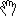

"Tools" menu
-
 Select tags
Select tags
-  Move signal
-
 Magnify the signal
Magnify the signal
-
 Measure signal
Measure signal
-
 Signal FFT
Signal FFT
-
 Select signal fragments
Select signal fragments
The above functions are also avalable via icons in the main toolbar.
- Preferences
-
— choosing this option opens a window with the following tabs for setting parameters for:
- Signal viewing
- Signal zooming
- Tagging
- Tools
- Online
- SignalML Codecs
- Miscellaneous